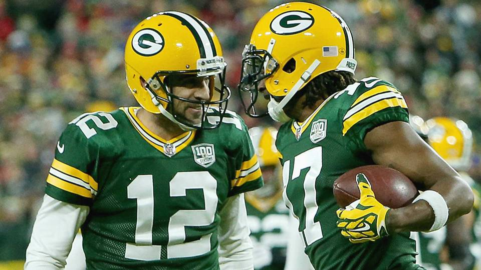

New England Patriots

For yet another season, the Patriots are one of the top NFL teams, and are large favorites on this list to win Super Bowl LIV. As one of the greatest duos in the history of the NFL, quarterback, Tom Brady and head coach, Bill Belicheck have gone off to lead the league with an 8-1 record. At a remarkable age of 42, Brady has shown no signs of his talent declining, having thrown for 14 touchdown and over 2,500 yards. As one of the most clutch QB's to have ever lived, Brady has demonstrated time after time that he can pull out a victory in the tense moments. Not only has the Patriot's offense been successful, but their defense has taken over the league. With an incredible coaching staff that has been able to disguise their identity against different teams, they are averaging 10.8 points and under 250 yards allowed a game. Although the Pats suffered a tough loss against the Ravens where they did not perform to expectations, they will look to bounce back and continue to be league leaders. They have had an overral dominance over the league in recent years, having appeared in four out of the last five Super Bowls and winning three of them. While there are other teams to compete with, the Pats will certainly have good odds for this year's Super Bowl.
Baltimore Ravens

With young QB, Lamar Jackson, who has proved himself as an NFL star, the Baltimore Ravens are certainly heading in the right direction to win Super Bowl LIV. Going into his second NFL year, we all new Jackson could be one of the best running QBs, rushing for nearly 700 yards in only seven games of the 2018-19 season. However, it is clear that he has made major strides to improve his passing game. By using his inept running ability to caution defenses, he has opened up the field to pass the ball. Along with 788 rushing yards this season, he has thrown for 2,258 and 15 touchdowns. Jackson't ability to lead the Raven's to a current 7-2 record, first in the AFC North, is an achievement in itself. It will be fun to see how the leading 2019 MVP candidate will handle big games such as a possible Super Bowl.
San Francisco 49ers

Tied for league leaders with the Patriots with an 8-1 record, the 49ers are definitely a team that has a chance to compete in the Super Bowl. The 49ers have dictated the field both offensively and defensively consistently throughout the season. Their QB, Jimmy Goropolo has had one of his most successful years so far, throwing for 14 touchdowns and well over 2000 yards. For three years, he has been under the influence of one of the greatest quarterbacks of all time, Tom Brady, and greatest coaches, Bill Bellicheck. This has helped him mature as a player, and he will only get better in future seasons. The 49ers defense have also stepped up to play a major role in their success, being ranked second in the league next to the Pats. They have only allowed an average of 15.5 points and 253 yards. Many may not be surprised if the 9ers took home Super Bowl glory.
Green Bay Packers
With an 8-2 record, the Packers are an important team to keep an eye on. One of the great QBs to have dominated the league, Aaron Rogers is having yet another MVP level season. He has played an instrumental role for the Packers, throwing for 17 touchdowns already and nearly 2,500 yards. With weapons like Davante Adams, one of the league's best wide receivers, it is hard for the Packers to be stopped offensively. The offense is also matched with an equally dangerous defensive rush. Two top pass rushers in the league, Preston and Za'darious Smith are always capable of getting to the opposing quarterback. While the competition will not be easy, the Packers have proved that their raw skill can take out any team in the league.
Seattle Seahawks

Once again, the Seahawks are having a tremendous season. Having beaten top level competitors like the 49ers, they are at a current record of 7-2. Russell Wilson is a scoring machine, throwing for 23 touchdowns and 2,737 yards, by far the most on this list. The seahawks rushing game is also lethal with 1332 total rushing yards. In general, Seattle is a well-rounded team throughout the charts. Their ability to score points and dominate teams have made this season more similar to the ones of their 2 consecutive Super Bowl appearances. They will still need to keep their momentum moving forward.
New Orleans Saints

Even though they had begun the season without their historically great QB, Drew Breeze, the Saints have had a positive season thus far. Teddy Bridgewater filled Breeze's role with confidence, winning 6 out of the 7 games he played in and throwing for 9 touchdowns. Also, key players such as Alvin Kamara (RB) and Michael Thomas (WR) have made the job much easier for Bridgewater. Despite their success, Drew Breeze has struggled to recover from his injured time off and to keep the Saints on track to compete well in the playoffs. He suffered a loss against the 2-7 falcons, and will need to step it up in future games to be capable of beating top ranked teams.
Kansas City Chiefs

Although having the worst record on this list at 6-4, it's hard not to include the Chiefs as Super Bowl contenders. After all, they have the reigning NFL MVP, Patrick Mahomes. As a true NFL superstar, Mahomes is not only the future of the league, but one of the top dominators currently. His stats are remarkable, throwing for 18 touchdowns and over 2500 yards. The Chiefs have, however, suffered a hiccup after Mahomes' knee injury against the Denver Broncos. With one of the league's most threatening offenses though, it will be interesting to see how Maholmes will bounce back and produce similar outcomes to those of last season.